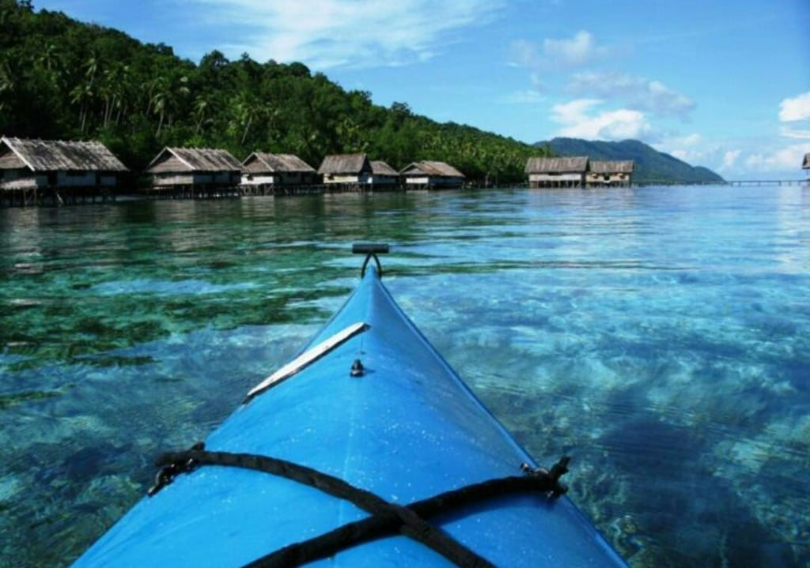

Wisata Populer di Papua

Teluk Cenderawasih
Taman nasional Teluk Cenderawasih menjadi kawasan konservasi laut terbesar dan terluas di Indonesia. Disini, terdapat 196 jenis moluska dan 209 jenis ikan yang bisa disaksikan di alam bawah laut.
Lihat Detail
Danau Sentani
Ada banyak kegiatan yang bisa kamu lakukan di Danau Sentani mulai dari berenang, memancing, menyantap kuliner di sekitar danau sampai menyewa perahu untuk berkeliling danau.
Lihat Detail

Suwandarek
Di desa Suwandarek kamu bisa bertemu langsung dengan suku asli yang hidup di pesisir. Disini bisa menyelam dan snorkeling. Selain itu bisa juga trekking ke telaga unik yang ada di desa ini.
Lihat Detail